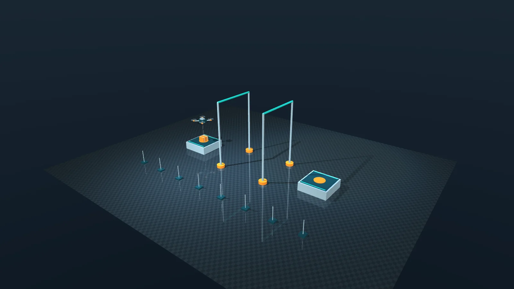
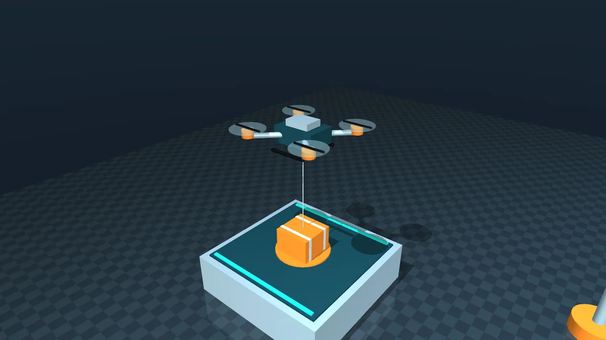
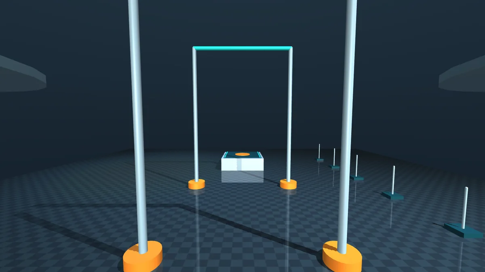
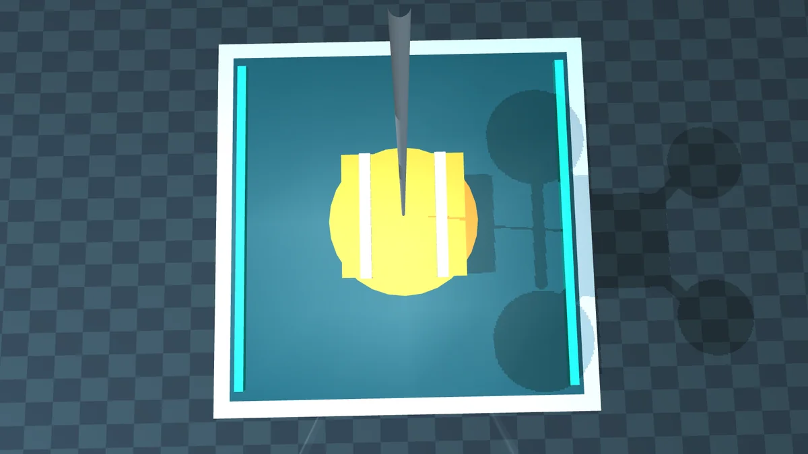
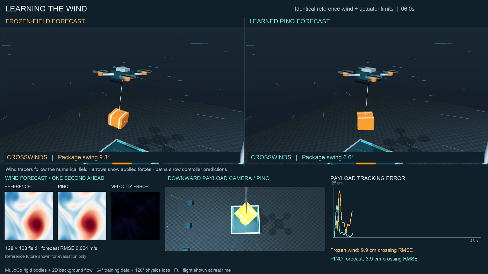
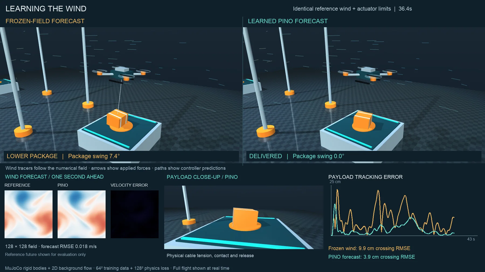
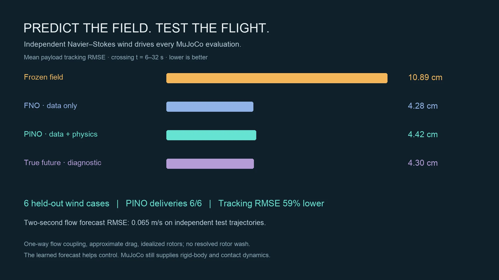
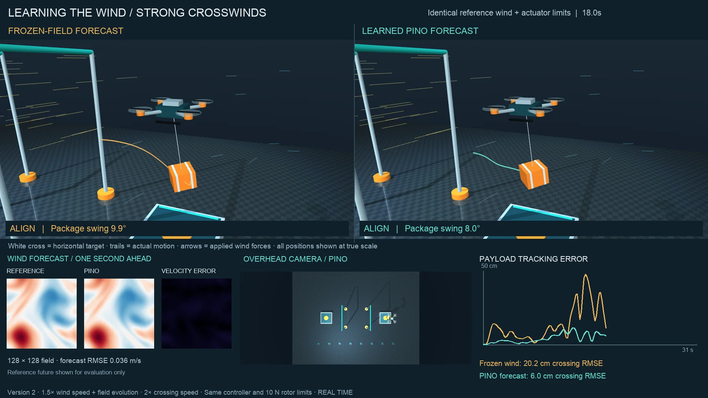
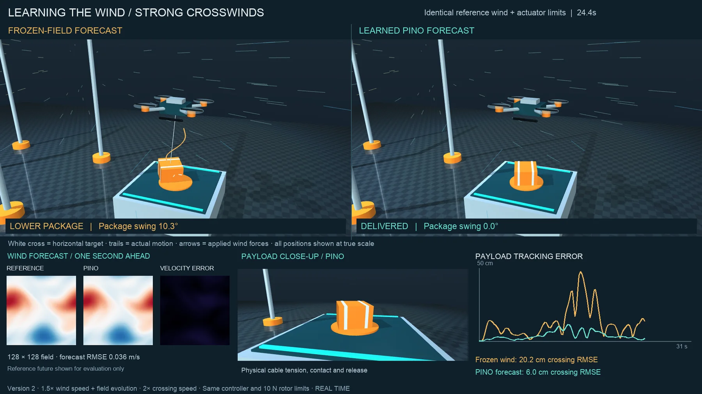
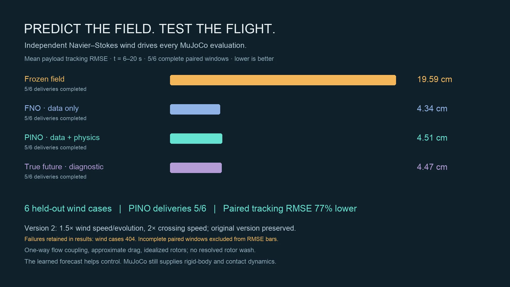

1 · A static scene first
September 9 · a research brief, then a scene that does not move
The project began with a neural-operator research brief and one question: what could we build in simulation that would make a strong video? The answer we accepted was a quadrotor carrying a parcel on a cable through changing crosswinds, flown side by side with and without a learned wind forecast. MuJoCo keeps the rigid bodies, the cable, the rotors and the contacts. The neural operator only forecasts the air. The brief was a starting point. This project does not reproduce any published benchmark.
Before anything moved we built the static scene and checked it from several cameras: a generic quadrotor made of geometric primitives, a foam parcel, pickup and delivery platforms 5.4 m apart, two gates, and onboard and external cameras.




| Part | Value and reason |
|---|---|
| Aircraft | 2.0 kg; diagonal inertia 0.035, 0.035, 0.055 kg m²; a compact inspection drone, not a vendor model |
| Parcel | 0.20 kg, 26 × 26 × 20 cm; a light foam box with a large area facing the wind |
| Rotors | Four sites at ±0.24 m; 0–10 N each, so 40 N against a 21.58 N loaded weight; 0.03 s first-order lag |
| Cable | Unilateral spatial tendon, 0.65 m between attachments; it can go slack and never pushes |
| Contact | Friction 0.8; compliant MuJoCo contact; the parcel is never welded to anything |
| Integration | Standard CPU MuJoCo, 2 ms step (500 Hz), implicitfast, gravity 9.81 m/s² |
| Route | Lift, a 5.4 m crossing at 1.90 m cruise height through two gates, then lower and release: a 43 s flight |
2 · The wind is its own simulation
September 9 · an independent Navier–Stokes solver, applied as drag
Every flight flies through the output of an independent numerical solver, including the flights that use neural forecasts. No flight ever flies through a network's prediction. The solver handles the forced, incompressible 2D vorticity equation on a periodic 12 × 12 m domain, with viscosity 0.04 m²/s, Fourier derivatives, 2/3 dealiasing and third-order SSP Runge–Kutta. Its internal step is at most 0.01 s at 64², 0.005 s at 128² and 0.0025 s at 256². Tests check exact Taylor–Green vortex decay and the divergence without involving any learned model.
Each seed draws its own mix of 12 low Fourier modes, with an initial vorticity RMS of 2 s⁻¹, random phases and steady forcing. These modes sit on top of a mean wind of 1.4–2.2 m/s across the route and −0.4 to 0.4 m/s along it. The evolving vortices add gusts that change in space and time.
Drag at five points
- F = c ‖u − v‖ (u − v) at each rotor and at the parcel's centre
- Aircraft c = 0.14 kg/m, split over four rotors; parcel c = 0.045 kg/m
- v is the actual velocity of each point, so swinging and tilting change the drag
mj_applyFTadds each force and its moment, rebuilt from zero every 2 ms step
One-way coupling
- Air moves horizontally; the aircraft and gates do not change it
- Drag dissipates energy relative to the air, but moving air can still do work on the aircraft
- The same wind drives every method within a seed
Not modelled
- Rotor wash, obstacle wakes and pressure integration
- Vertical turbulence; cable mass and cable drag
- Calibration against a real aircraft or real wind
3 · One controller, four forecasts
September 9 · the controller is written by hand; only the forecast changes
The controller is programmed, not learned. At 10 Hz it plans 2 s ahead with a linearized model of the aircraft and its swinging parcel. The model tracks position, speed, swing angle, swing rate and the lag of horizontal rotor force, and a quadratic cost over the horizon penalizes parcel error, aircraft error, swing, effort and slew. The controller solves the unconstrained problem and then clips horizontal force to ±6 N per axis. A geometric attitude loop at 100 Hz turns that force into an orientation and four rotor commands. This is an approximate predictive controller, not a constrained nonlinear MPC, and the route is fixed rather than planned.
Wind enters the plan as predicted drag along the reference path. The four methods differ only in where those 2 s of future wind come from:
| Method | Wind over the 2 s horizon | Deployable |
|---|---|---|
| Frozen field | The last observed field, held fixed | Yes |
| FNO | The observation advanced by the data-only neural operator | Yes |
| PINO | The observation advanced by the operator that was also trained on a PDE residual | Yes |
| True future | The solver's actual future wind | No; a diagnostic, not an optimum |

4 · Training the forecasters
September 9 · 48 training winds, one RTX 4090, 64 epochs per model
Both predictors are the official NeuralOperator FNO: four Fourier layers, width 32, 16 × 16 retained modes, and 603,041 parameter elements counting complex spectral weights. Each takes the current vorticity, the steady forcing and the mean wind, and predicts a mean-preserving update for the next 0.25 s. Chained eight times, that covers the controller's 2 s horizon. The same weights also run on other grid sizes.
PINO here is an FNO trained with one extra loss term. The two runs share the initialization, data, minibatch order and learning-rate schedule for 64 epochs. From epoch 33, every fourth PINO minibatch adds a Navier–Stokes residual at weight 0.03, computed on 128² inputs that are Fourier-interpolated from the coarse data. There are no 128² labels. The residual uses a trapezoidal time step, so it acts as a soft regularizer and does not guarantee physical consistency.
| Partition | Seeds | Use |
|---|---|---|
| Training | 0–47 | 48 trajectories × 64 steps: 3,072 supervised pairs on 64² |
| Checkpoint selection | 100–107 | One-step error on independent trajectories |
| Flow evaluation | 200–203 | 64² and 128² from 2, 12 and 28 s; 256² from 12 s; leads 0.25, 1 and 2 s |
| Flight development | 200 | Controller tuning before any held-out flight |
| Flight evaluation | 300–305 | All four methods on all six winds (version 2: 400–405) |
| Grid and start times | FNO, 2 s velocity RMSE | PINO |
|---|---|---|
| 64², starts at 2, 12 and 28 s | 0.0643 m/s | 0.0650 m/s |
| 128², the same starts | 0.0643 m/s | 0.0650 m/s |
| 64² or 128², 12 s start only | 0.0413 m/s | 0.0434 m/s |
| 256², 12 s start, unseen by both losses | 0.0413 m/s | 0.0434 m/s |
At a 2 s lead, the forecast velocity error is 2–5% of the frozen field's error, depending on the start time. The 256² row looks better only because it uses the 12 s start alone, and at that same start the coarser grids give the identical error. A direct 128² PINO rollout has a relative vorticity error of 0.057133. Fourier interpolation of the 64² rollout gives the same 0.057133.
Training ran on an RTX 4090. Evaluation and every flight ran on an Apple M3 Max, with forecasts on Metal and MuJoCo on the CPU. Optimization can follow different paths on different devices, so the checkpoints are committed and evaluation does not depend on retraining.
5 · CUDA and Metal disagreed
September 9 · a portability bug, a pinned upstream fix, then retraining
An FNO layer multiplies Fourier modes by learned complex weights and returns to a real field through a real
inverse FFT. That transform assumes the spectrum is Hermitian-symmetric, as the spectrum of any real field is.
The transform leaves any part that breaks the symmetry undefined, and different FFT backends handled that part
differently. NeuralOperator fixed this upstream: commit 00b7d86 explicitly enforces Hermitian
symmetry before the real inverse FFT. We pinned the dependency to that commit in uv.lock, turned
off TF32 so CUDA arithmetic stays comparable with the CPU and Metal, and retrained both models. The committed
weights are the retrained ones.
| Model | Grid | CPU vs CUDA | CPU vs Metal |
|---|---|---|---|
| FNO | 64² | 4.8 × 10⁻⁶ | 5.1 × 10⁻⁶ |
| FNO | 128² | 6.8 × 10⁻⁶ | 6.0 × 10⁻⁶ |
| FNO | 256² | 7.0 × 10⁻⁶ | 9.1 × 10⁻⁶ |
| PINO | 64² | 5.1 × 10⁻⁶ | 5.4 × 10⁻⁶ |
| PINO | 128² | 6.2 × 10⁻⁶ | 6.9 × 10⁻⁶ |
| PINO | 256² | 8.2 × 10⁻⁶ | 9.5 × 10⁻⁶ |
Values are the largest absolute vorticity difference, in s⁻¹, after eight chained 0.25 s steps (2 s), with the fixed models. For scale, the initial vorticity RMS is 2 s⁻¹. When the repository was later set up on the GPU machine, both committed models passed the CPU/CUDA check again, with a largest difference of 8.23 × 10⁻⁶ s⁻¹.
scripts/check_wind_backend.py). A regression test checks the Hermitian setting and that
gradients stay finite. The repository's guidelines keep the pinned revision until a replacement passes the same
checks.6 · Standard flights: 24 of 24
September 9 · six held-out winds, four forecasts, one controller
| Wind seed | Frozen field | FNO | PINO | True future |
|---|---|---|---|---|
| 300 | 9.90 cm | 3.88 cm | 3.88 cm | 3.65 cm |
| 301 | 13.33 cm | 6.02 cm | 6.39 cm | 6.31 cm |
| 302 | 8.26 cm | 3.03 cm | 2.96 cm | 2.99 cm |
| 303 | 9.36 cm | 2.70 cm | 2.76 cm | 2.43 cm |
| 304 | 13.43 cm | 3.71 cm | 3.73 cm | 3.72 cm |
| 305 | 11.07 cm | 6.34 cm | 6.79 cm | 6.72 cm |
| Mean | 10.89 cm | 4.28 cm | 4.42 cm | 4.30 cm |
The forecast is what helps. Both learned forecasts cut the error by about 60% compared with holding the wind fixed, and they land within 0.14 cm of each other and of the true-future diagnostic. FNO is lower than PINO on four of the six winds and PINO on one, and they tie on seed 300. On three winds (301, 304 and 305), FNO even beats the true future. The controller's model is approximate, so a perfect forecast does not guarantee the lowest error.


7 · Version 2: stronger wind, faster crossing
September 9 · a follow-up, kept separate from the original
After the first version we were asked for more aggressive dynamics, and then to keep the original intact.
Version 2 is a separate aggressive preset with fresh seeds 400–405 and its own output folders. The
original video, checkpoints and standard preset are unchanged. Rerunning the standard trajectory reproduced it
exactly.
To make the wind 1.5× stronger while keeping the same physics, version 2 uses the Navier–Stokes similarity transform unew(x, t) = s·ubase(x, s·t) with s = 1.5. Viscosity becomes 0.06 m²/s, vorticity scales by s and forcing by s². Wind speed and the rate of gust evolution both rise 1.5×, the Reynolds number stays the same, and the aircraft's mass, gravity and actuator time constants are unchanged. The trained models needed no retraining. They forecast 3 native seconds for each 2 s physical horizon, and the output is rescaled. The observation clock scales too, to 6 Hz.
| Parameter | Original | Version 2 |
|---|---|---|
| Wind speed and evolution rate | 1× | 1.5× |
| 5.4 m crossing | 24 s | 12 s |
| Peak commanded cruise speed | 0.3375 m/s | 0.675 m/s |
| Crossing acceleration scale | 1× | 4× |
| Tracking window | 6–32 s | 6–20 s |
| Complete flight | 43 s | 31 s |
| Wind seeds | 300–305 | 400–405 |
| Masses, cable, contact, controller gains, 0–10 N rotors | Unchanged | |


The film at the top of the page is seed 400, the first new evaluation seed, chosen before the final results. Both flights deliver. The frozen-field parcel strays up to 47.7 cm from its target, against 11.4 cm for PINO, and the crossing RMSE is 20.17 cm against 5.99 cm. Peak sling angles are close, 46.2° against 43.4°, and peak aircraft tilt is 21.2° against 16.9°. The forecast keeps the parcel on its path. It does not stop the wind from swinging it.
The first version 2 cut ran 50 s, with a 4 s frozen opening and a 5 s frozen end. Both holds were removed the same evening, leaving the 31 s flight at real time and the 10 s results card: 41 s and 1,025 frames, all of which decoded without error.
8 · Seed 404, kept on record
September 9 · one wind beyond this controller and these rotors
| Method | What happened | Run ended |
|---|---|---|
| Frozen field | Struck a gate and dropped below the flight envelope | 15.67 s |
| FNO | Drifted past the lateral envelope during the lift, before the crossing began | 5.58 s |
| PINO | The same lateral drift during the lift | 5.54 s |
| True future | Flew all 31 s and set the parcel on the platform, but contacted a gate, so the mission failed | 31.00 s |
The seed 404 runs met winds of 8.09–8.33 m/s at the aircraft and parcel, among the strongest of the six seeds. Wind speed alone does not explain the failure, though. On seed 403 the wind reached 8.13 m/s and every method also hit the rotor limit, yet all four delivered.
The failure also changes how the error is measured. The failed FNO and PINO runs ended before the crossing began, so their reports hold no tracking samples. Counting them would have entered zero error for the two worst flights. The RMSE comparison therefore uses only the five windows that every method completed (seeds 400, 401, 402, 403 and 405).

9 · Next steps
What would make the claim stronger
Nothing here is calibrated to a real aircraft or real wind. The result is the value of forecasting the wind within this simulated test family, flown by a programmed controller.